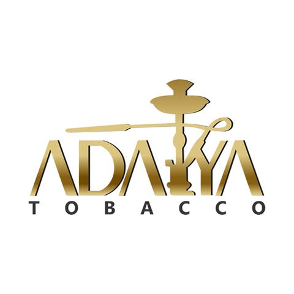
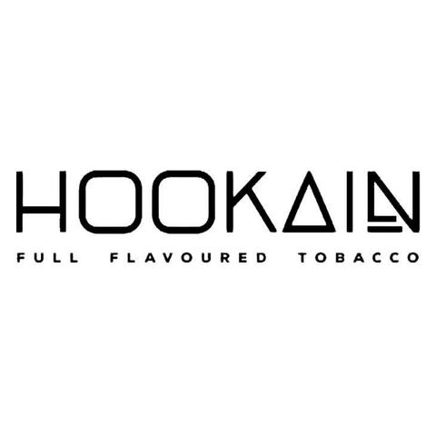
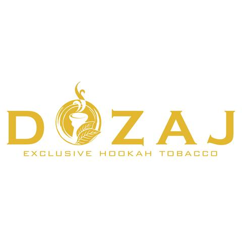

Las 4 marcas de tabaco más fumadas

Ya lo sabéis, pero el verdadero amante de la cachimba es un tremendo experto en marcas de tabaco, de hecho, no se pierde ni un lanzamiento y se conoce al dedillo casi todas las referencias más vendidas de cada marca. ¿Acabas de empezar en esto? Pues no te preocupes porque en este post te vamos a hablar sobre las cuatro marcas de tabaco de cachimba favoritas de los cachimberos.
Adalya:
Adalya es una marca de tabaco para cachimba de Origen turco que puedes encontrar en los estancos con un formato de 50 gramos a un precio de 2,95 euros. La apuesta fuerte de Adalya es Love66, una misteriosa mezcla que pretende concentrar el amor en un solo aroma a base de evocar frutas tropicales y aderezarlas con menta y miel. Tampoco podemos perdernos la energía playera de Hawall, que consigue con mango y piña, ni la potencia imparable de L. Kill ideado para sesiones largas e intensas con gusto a mango con frutos del bosque.
Blue Horse
Blue Horse es otra marca de tabaco para cachimba de origen turco. Esta firma se caracteriza por ser una submarca de Adalya, por lo que la calidad y los sabores suelen ser muy similares. Cabe destacar que los cítricos y las frutas son los verdaderos protagonistas de la carta de sabores. Asimismo, no hay que perder de vista los que combinan las esencias florales y una referencia en concreto, que se posiciona a ser el bestseller de la marca: La Beirut.
Hookain:
Una de las grandes revelaciones del mercado de shisha en España. Esta marca de tabaco es de origen alemán y se caracteriza por su hoja rubia y su excelsa cantidad de melaza. Apuesta por sabores totalmente originales y unas mezclas muy interesantes. Su referencia más vendida y favorita de los cachimberos es White Caek, tarta de queso con caramelo.
dozaj
Dozaj es otra marca de tabaco turco que está revolucionando el mercado español. Tras una primera llegada a España en la que apenas tuvo un impacto residual, Dozaj se ha convertido en uno de los tabacos más vendidos en los últimos dos años. El porqué es bastante sencillo, sus sabores que están revolucionando todos los paladares. El más característico de ellos, Nairobi, un sabor que recuerda a una mezcla de Nesquik y Colacao
Ya sabes cuáles son las cuatro marcas favoritas de los cachimberos, pero aquí no queda todo porque en futuros posts iremos desvelando todas las que debes conocer. Ahora el siguiente paso es que actualices o te hagas con una nueva cachimba y disfrutes de esta afición como un rey. Además, te recomendamos que te pases por nuestra sección Shishadvisor, donde podrás conocer los detalles de todos los tabacos del mercado, para así conocer sus formatos, precios y sabores.